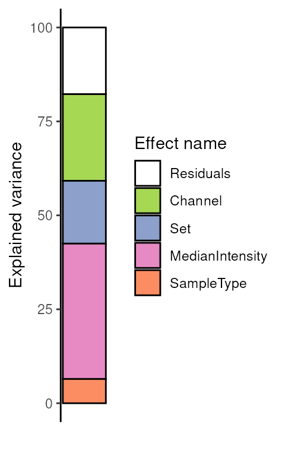
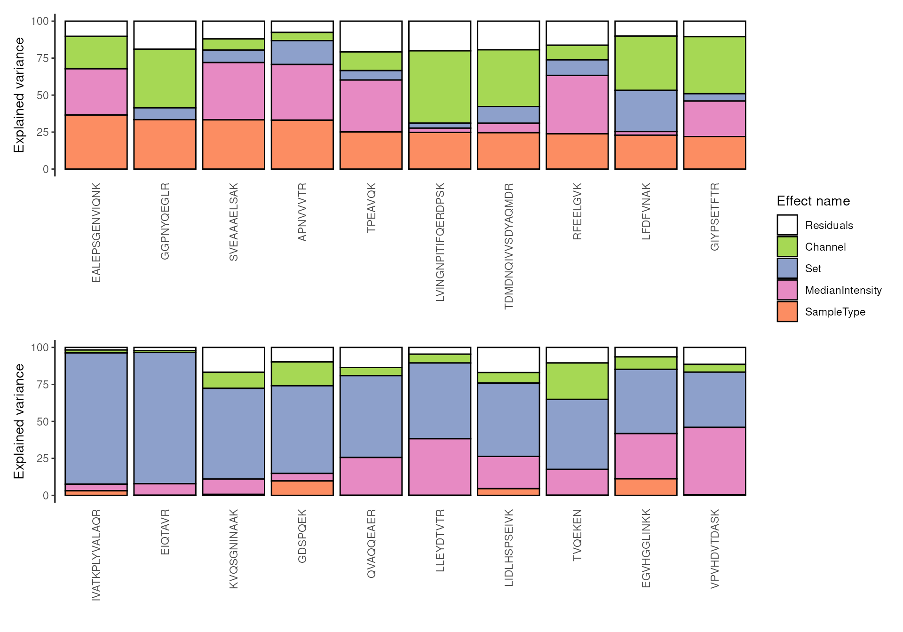
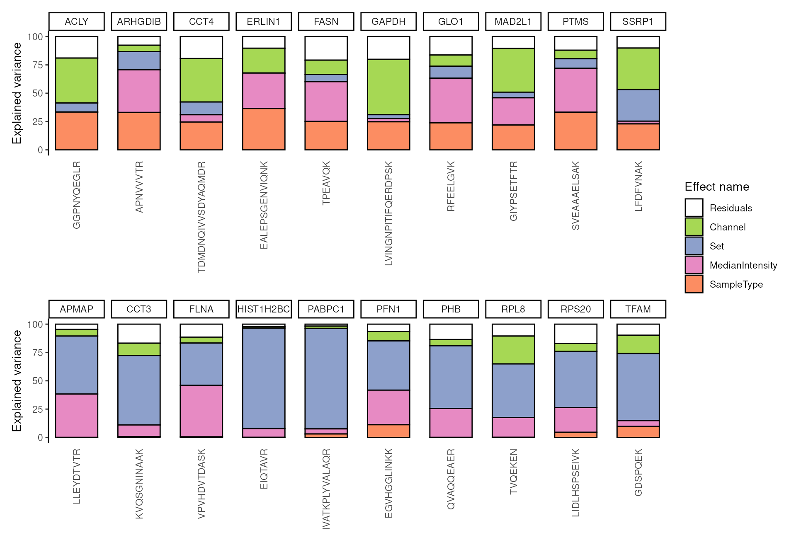

Single Cell Proteomics data modelling
Laurent Gatto
Christophe Vanderaa
2 April 2024
Source:vignettes/scp_data_modelling.Rmd
scp_data_modelling.RmdIntroduction
In this tutorial, we’ll walk you through the process of modelling single-cell proteomics (SCP) data. By the end of this vignette, you will be able to:
- Define and estimate a model suitable for SCP data
- Filter peptides based on the patterns of missing values
- Exploring the model output through analysis of variance
- Exploring the model output through differential abundance analysis
- Exploring the model output through component analysis
- Perform batch correction to remove unwanted technical artefacts
The last point will allow you to generate SCP data that is suitable for downstream analysis, such as clustering or trajectory inference. The figure below provides a roadmap of the workflow:
The vignette will start with the processed data extracted as a
SingleCellExperiment object from a processed
QFeatures object. We will not cover data processing as it
is covered in another vignette.
Example data set
The example data set is a subset of the leduc2022_pSCoPE
data set (see ?scpdata::leduc2022_pSCoPE for more info).
The data is acquired using TMT-18 multiplexing and data-dependent
acquisition (DDA). The data has been processed using a minimal
workflow:
- Any zero value has been replaced by NA.
- Any peptide was removed from the data set if it matched to a decoy or contaminant peptide, had low spectral purity, had low identification confidence, or had a high sample to carrier ratio.
- Any cell was removed from the data set if it had a high coefficient of variation, had an abberrant median intensity, or had few identified peptides.
- PSM data were combined into peptide data. When multiple PSM match to the same peptide, the median intensity was taken.
- Intensities were log2 transformed
- To limit intensive computation, we have limited the data set to 200 peptides in 73 cells.
We suggest using this minimal processing workflow, although the
approach presented here is agnostic of previous processing and allows
for other custom workflows. The data processing was conducted with
QFeatures and scp.
data("leduc_minimal")
leduc_minimal
#> class: SingleCellExperiment
#> dim: 200 73
#> metadata(1): model
#> assays(1): ''
#> rownames(200): SAVEDEGLK APNVVVTR ... FLLAVSRDR EASMVITESPAALQLR
#> rowData names(6): Sequence Reverse ... Leading.razor.protein.symbol
#> gene
#> colnames(73): eAL00219RI5 eAL00219RI6 ... wAL00286RI17 wAL00286RI18
#> colData names(12): Set Channel ... MedianCV passQC
#> reducedDimNames(0):
#> mainExpName: NULL
#> altExpNames(0):The data set is formatted as a SingleCellExperiment
object. The data set consists of 200 peptides and 73 cells. Peptide
annotations can be retrieved from the rowData and cell
annotations can be retrieved from the colData. The cell
annotation will be used during modelling.
Data modelling
The core of the approach relies on statistical modelling of the data
using linear regression. Under the hood, the model fetches as input the
intensity matrix stored in assay(leduc_minimal). The cell
annotations are retrieved using colData(leduc_minimal).
They describe known technical and biological variables that may
influence the acquired peptide intensities. The annotations are used to
build a regression model with \(p\)
parameters. Then, the model estimates the coefficients. Coefficients
provide the contributions of each parameter to the expression of each of
peptide as well as the uncertainty of the estimation. These will be
explored in the following section.
We’ll start by defining the variables to include in the model. Recall that the example data set contains TMT-labeled cells. This means that each MS acquisition run contains multiple cells. Each run is subject to technical fluctuations that can lead to undesired variation, this is known as a batch effect.
table(leduc_minimal$Set)
#>
#> eAL00219 eAL00220 eAL00221 wAL00284 wAL00285 wAL00286
#> 13 12 12 12 12 12The labelling reagent (Channel) can also lead to
undesired systematic effects and will also be considered as a source for
batch effects.
table(leduc_minimal$Channel)
#>
#> TMT126 TMT127N TMT127C TMT128N TMT128C TMT129N TMT129C TMT130N TMT130C TMT131N
#> 0 0 0 0 6 5 6 6 5 4
#> TMT131C TMT132N TMT132C TMT133N TMT133C TMT134N TMT134C TMT135N
#> 5 5 5 6 5 5 5 5Finally, each cell is processed individually and the amount of
peptide material recovered from each cell may lead to undesired
variation as well. This issue is usually solved through normalization,
such as removing the median intensity from each cell. Normalization was
internationally omitted in the minimal data processing so that we can
account for it during modelling. The median intensity were already
computed (MedianIntensity).
hist(leduc_minimal$MedianIntensity, breaks = 10)
Finally, the biological variable of interest in the example data set
is the cell type that is known because cells come from 2 cell lines
(SampleType).
table(leduc_minimal$SampleType)
#>
#> Melanoma Monocyte
#> 37 36We create a formula object that will define which
variable must be modelled in our analysis.
f <- ~ 1 + ## intercept
Channel + Set + ## batch variables
MedianIntensity + ## normalization
SampleType ## biological variableNote that the formula can be adapted to the data set. For instance, no labelling reagents is used for LFQ experiments, so it can be dropped. Similarly, each cell in an LFQ experiment is acquired in a single run so MS run cannot be used as a batch effect variable. The day of acquisition could be used instead.
Once a model is defined, we fit it with
scpModelWorkflow().
leduc_minimal <- scpModelWorkflow(leduc_minimal, formula = f)You can always retrieve the formula that was used to fit model using
scpModelFormula(leduc_minimal)
#> ~1 + Channel + Set + MedianIntensity + SampleTypeThe data that is modelled by each variable are contained in the so-called effect matrices.
scpModelEffects(leduc_minimal)
#> List of length 4
#> names(4): Channel Set MedianIntensity SampleTypeSimilarly, the data that could not be captured by the model are contained in the residual matrix.
scpModelResiduals(leduc_minimal)[1:5, 1:5]
#> eAL00219RI5 eAL00219RI6 eAL00219RI7 eAL00219RI8 eAL00219RI9
#> SAVEDEGLK NA NA NA NA NA
#> APNVVVTR -0.2112685 0.2569749 -0.08076257 -0.03317054 0.06679681
#> IVVVTAGVR NA NA NA NA NA
#> GFQEVVTPNIFNSR 0.6375780 -0.3356473 0.34648412 -0.80982152 0.96378484
#> ENAYDLEANLAVLK NA NA NA NA NAFinally, the input data used to model the can also be retrieved.
scpModelInput(leduc_minimal)[1:5, 1:5]
#> eAL00219RI5 eAL00219RI6 eAL00219RI7 eAL00219RI8 eAL00219RI9
#> SAVEDEGLK NA NA NA NA NA
#> APNVVVTR 13.56997 13.85389 13.362218 13.110304 14.03041
#> IVVVTAGVR NA NA NA NA NA
#> GFQEVVTPNIFNSR 10.78733 9.36700 9.815223 7.878296 11.01890
#> ENAYDLEANLAVLK NA NA NA NA NANote that the number of peptides changed. This is the consequence of peptide filtering.
dim(scpModelInput(leduc_minimal))
#> [1] 140 73Peptide filtering
The proportion of missing values for each features is high in single-cell proteomics data.
Many features can typically contain more coefficients to estimate than observed values. These features cannot be estimated and will be ignored during further steps. These features are identified by computing the ratio between the number of observed values and the number of coefficients to estimate. We call it the n/p ratio. You can extract the n/p ratio for each feature:
head(scpModelFilterNPRatio(leduc_minimal))
#> SAVEDEGLK APNVVVTR IVVVTAGVR GFQEVVTPNIFNSR ENAYDLEANLAVLK
#> 1.277778 3.476190 1.411765 2.333333 1.235294
#> IGPLGLSPK
#> 1.888889Once the model is estimated, use scpModelFilterPlot() to
explore the distribution of n/p ratios across the features.
scpModelFilterPlot(leduc_minimal)
#> To change the threshold, use:
#> scpModelFilterThreshold(object, name) <- threshold
By default, any feature that has an n/p ration greater than 1 is included in the analysis. However, feature with an n/p ratio close to 1 may lead to unreliable outcome because there are not enough observed data. You could consider the n/p ratio as the average number of replicate per coefficient to estimate. Therefore, you may want to increase the n/p threshold.
scpModelFilterThreshold(leduc_minimal) ## default is 1
#> [1] 1
scpModelFilterThreshold(leduc_minimal) <- 1.5
scpModelFilterThreshold(leduc_minimal) ## threshold is now 1.5
#> [1] 1.5The plot is automatically updated.
scpModelFilterPlot(leduc_minimal)
#> To change the threshold, use:
#> scpModelFilterThreshold(object, name) <- thresholdThere is no guidelines for defining a suitable threshold. If too low, you may include noisy peptides that have too few observations. If too high, you may remove many informative peptides. The definition of the threshold relies on a trade off between precision and sensitivity.
Model exploration: analysis of variance
The variance analysis reports the relative amount of information that is captured by each cell annotation included in the model. The model also includes the residual information that is not captured by the model. This offers a first glimpse into what information is contained in the data.
(vaRes <- scpVarianceAnalysis(leduc_minimal))
#> DataFrameList of length 5
#> names(5): Residuals Channel Set MedianIntensity SampleTypeThe results are a list of tables, one table for each variable. Each
table reports for each peptide the variance captures (SS),
the residual degrees of freedom for estimating the variance
(df) and the percentage of total variance explained
(percentExplainedVar).
vaRes$SampleType
#> DataFrame with 95 rows and 4 columns
#> feature SS df percentExplainedVar
#> <character> <numeric> <numeric> <numeric>
#> 1 APNVVVTR 27.8682309 51 33.052188
#> 2 GFQEVVTPNI... 0.1106189 27 0.392004
#> 3 IGPLGLSPK 0.0442532 15 0.242434
#> 4 VAETANEEEV... 0.4973533 10 2.694342
#> 5 IDATSASVLA... 0.9271610 35 2.174504
#> ... ... ... ... ...
#> 91 SVPTSTVFYP... 1.88199 47 4.60836
#> 92 HIVENAVQK 1.05939 18 4.80442
#> 93 TDMDNQIVVS... 4.31709 8 24.56762
#> 94 AILGSVER 2.51736 15 15.90057
#> 95 LGAEVYHTLK 2.47027 14 10.14771By default, we explore the variance for all peptides combined:
scpVariancePlot(vaRes)
We explore the top 20 peptides that are have the highest percentage of variance explained by the biological variable (top) or by the batch variable (bottom).
scpVariancePlot(
vaRes, top = 10, by = "percentExplainedVar", effect = "SampleType",
decreasing = TRUE, combined = FALSE
) +
scpVariancePlot(
vaRes, top = 10, by = "percentExplainedVar", effect = "Set",
decreasing = TRUE, combined = FALSE
) +
plot_layout(ncol = 1, guides = "collect")
We can also group the peptide by protein. To do so, we first need to
add the peptides annotations available from the
rowData.
vaRes <- scpAnnotateResults(
vaRes, rowData(leduc_minimal), by = "feature", by2 = "Sequence"
)
vaRes$SampleType
#> DataFrame with 95 rows and 9 columns
#> feature SS df percentExplainedVar Reverse
#> <character> <numeric> <numeric> <numeric> <character>
#> 1 APNVVVTR 27.8682309 51 33.052188
#> 2 GFQEVVTPNI... 0.1106189 27 0.392004
#> 3 IGPLGLSPK 0.0442532 15 0.242434
#> 4 VAETANEEEV... 0.4973533 10 2.694342
#> 5 IDATSASVLA... 0.9271610 35 2.174504
#> ... ... ... ... ... ...
#> 91 SVPTSTVFYP... 1.88199 47 4.60836
#> 92 HIVENAVQK 1.05939 18 4.80442
#> 93 TDMDNQIVVS... 4.31709 8 24.56762
#> 94 AILGSVER 2.51736 15 15.90057
#> 95 LGAEVYHTLK 2.47027 14 10.14771
#> Potential.contaminant Leading.razor.protein.id Leading.razor.protein.symbol
#> <character> <character> <character>
#> 1 P52566 GDIR2
#> 2 P26639 SYTC
#> 3 P30050 RL12
#> 4 P61221 ABCE1
#> 5 P13667 PDIA4
#> ... ... ... ...
#> 91 P29401 TKT
#> 92 O00410 IPO5
#> 93 P50991 TCPD
#> 94 P26639 SYTC
#> 95 P09104 ENOG
#> gene
#> <character>
#> 1 ARHGDIB
#> 2 TARS
#> 3 RPL12
#> 4 ABCE1
#> 5 PDIA4
#> ... ...
#> 91 TKT
#> 92 IPO5
#> 93 CCT4
#> 94 TARS
#> 95 ENO2Then, we draw the same plot, but this time we provide the
fcol argument.
scpVariancePlot(
vaRes, top = 10, by = "percentExplainedVar", effect = "SampleType",
decreasing = TRUE, combined = FALSE, fcol = "gene"
) +
scpVariancePlot(
vaRes, top = 10, by = "percentExplainedVar", effect = "Set",
decreasing = TRUE, combined = FALSE, fcol = "gene"
) +
plot_layout(ncol = 1, guides = "collect")
In this example dataset, we retrieve peptides that all belong to a different protein, however grouping becomes interesting when analyzing real data sets.
Alternatively, we can generate protein level results by aggregating peptide level results.
vaProtein <- scpVarianceAggregate(vaRes, fcol = "gene")
scpVariancePlot(
vaProtein, effect = "SampleType", top = 10, combined = FALSE
)
Model exploration: differential abundance analysis
Differential abundance analysis dives deeper into the exploration of the data, namely for exploring the biological effects. Given two groups of interest, such as two cell types or two treatment groups, the differential analysis derives estimated fold changes from the linear model’s coefficients. This provides information, for each peptide or protein, the amount of change between the two groups and the direction of the change. Moreover, the model provides the uncertainty of the differences, enabling the assessment of the statistical significance.
The difference of interest is specified using the
contrast argument. The first element points to the variable
to test and the two following element are the groups of interest to
compare. You can provide multiple contrast in a list.
(daRes <- scpDifferentialAnalysis(
leduc_minimal,
contrasts = list(c("SampleType", "Melanoma", "Monocyte"))
))
#> List of length 1
#> names(1): SampleType_Melanoma_vs_MonocyteSimilarly to variance analysis, the results are a list of tables, one table for each contrast. Each table reports for each peptide the estimated difference between the two groups, the standard error associated to the estimation, the degrees of freedom, the t-statistics, the associated p-value and the p-value FDR-adjusted for multiple testing across all peptides.
daRes$SampleType_Melanoma_vs_Monocyte
#> DataFrame with 95 rows and 7 columns
#> feature Estimate SE Df tstatistic pvalue
#> <character> <numeric> <numeric> <numeric> <numeric> <numeric>
#> 1 APNVVVTR -1.2357291 0.141593 51 -8.727320 1.08036e-11
#> 2 GFQEVVTPNI... 0.0950269 0.318729 27 0.298144 7.67876e-01
#> 3 IGPLGLSPK 0.0721544 0.387707 15 0.186106 8.54855e-01
#> 4 VAETANEEEV... 0.2619169 0.510036 10 0.513526 6.18738e-01
#> 5 IDATSASVLA... 0.2573437 0.253139 35 1.016610 3.16315e-01
#> ... ... ... ... ... ... ...
#> 91 SVPTSTVFYP... 0.330304 0.204954 47 1.611603 0.113744
#> 92 HIVENAVQK -0.338421 0.509468 18 -0.664263 0.514942
#> 93 TDMDNQIVVS... -0.814964 1.170811 8 -0.696068 0.506102
#> 94 AILGSVER -0.544206 0.380504 15 -1.430222 0.173153
#> 95 LGAEVYHTLK -0.547198 0.539435 14 -1.014392 0.327607
#> padj
#> <numeric>
#> 1 1.02635e-09
#> 2 8.98926e-01
#> 3 9.11797e-01
#> 4 8.77108e-01
#> 5 7.10426e-01
#> ... ...
#> 91 0.548850
#> 92 0.828720
#> 93 0.828720
#> 94 0.567226
#> 95 0.710426We then visualize the results using a volcano plot. The function below return a volcano plot for each contrast.
scpVolcanoPlot(daRes)
#> $SampleType_Melanoma_vs_Monocyte
Since we subset the data set for only a few cell, we lack statistical
power. Still, two peptides come out as significant. Again, to better
explore the results, we add peptide annotations available from the
rowData, but we also add the n/p ratio as annotation.
daRes <- scpAnnotateResults(
daRes, rowData(leduc_minimal),
by = "feature", by2 = "Sequence"
)
np <- scpModelFilterNPRatio(leduc_minimal)
daRes <- scpAnnotateResults(
daRes, data.frame(feature = names(np), npRatio = np),
by = "feature"
)We plot the same volcano plot, but instead of labeling points with
the peptide sequence, we will show the associated gene symbol. Also, we
can control for point aesthetics by providing a list of
ggplot2::geom_point() arguments. For example, we can colour
each point based on the n/p ratio, and adjust point size and shape.
scpVolcanoPlot(
daRes, top = 30, textBy = "gene",
pointParams = list(aes(colour = npRatio), size = 1.5, shape = 3)
)
#> $SampleType_Melanoma_vs_Monocyte
#> Warning: ggrepel: 14 unlabeled data points (too many overlaps). Consider
#> increasing max.overlaps
We can also provide protein-level results. To do so, the
scpDifferentialAggregate() relies on the
metapod package. We here combine the statistical test
results for peptides that belong to the same protein using Simes’
method. Simes’ method will reject the combined null hypothesis (that is
the mean protein intensities are identical between two
groups) if any of the peptide nulls are rejected.
byProteinDA <- scpDifferentialAggregate(
daRes, fcol = "gene", method = "simes"
)
byProteinDA$SampleType_Melanoma_vs_Monocyte
#> DataFrame with 86 rows and 11 columns
#> feature Estimate pvalue padj Reverse
#> <character> <numeric> <numeric> <numeric> <character>
#> ABCE1 ABCE1 0.2619169 0.6187376 0.869698
#> ACLY ACLY 1.0078958 0.0663496 0.479782
#> ACTN4 ACTN4 0.0576889 0.8128337 0.916011
#> AIFM1 AIFM1 -0.4300612 0.1550238 0.566106
#> APMAP APMAP -0.0683780 0.7492593 0.907553
#> ... ... ... ... ... ...
#> TPP2 TPP2 0.2494580 0.4825782 0.835182
#> TUBA1C TUBA1C 0.6951016 0.0669463 0.479782
#> VAT1 VAT1 0.4073205 0.0728939 0.482221
#> XRCC6 XRCC6 -0.0289353 0.8852577 0.917255
#> YWHAG YWHAG 0.0979855 0.6593722 0.879523
#> Potential.contaminant Leading.razor.protein.id
#> <character> <character>
#> ABCE1 P61221
#> ACLY P53396
#> ACTN4 O43707
#> AIFM1 O95831
#> APMAP Q9HDC9
#> ... ... ...
#> TPP2 P29144
#> TUBA1C Q9BQE3
#> VAT1 Q99536
#> XRCC6 P12956
#> YWHAG P61981
#> Leading.razor.protein.symbol gene npRatio .n
#> <character> <character> <NumericList> <integer>
#> ABCE1 ABCE1 ABCE1 1.61111 1
#> ACLY ACLY ACLY 1.77778 1
#> ACTN4 ACTN4 ACTN4 3 1
#> AIFM1 AIFM1 AIFM1 2.61905 1
#> APMAP APMAP APMAP 2.42105 1
#> ... ... ... ... ...
#> TPP2 TPP2 TPP2 2.05556 1
#> TUBA1C TBA1C TUBA1C 1.5 1
#> VAT1 VAT1 VAT1 3.38095,2.75000 2
#> XRCC6 XRCC6 XRCC6 2.52632 1
#> YWHAG 1433G YWHAG 2.9 1Model exploration: component analysis
Variance and differential analysis are not specific to single-cell applications and explore the data without considering cellular heterogeneity. The purpose of the component analysis is to dive into the cellular heterogeneity by representing highly dimensional data in a few informative dimensions for visual exploration. We integrate the component analysis with the linear regression model thanks to the APCA+ (extended ANOVA-simultaneous component analysis) framework developed by Thiel et al. 2017. Briefly, APCA+ explores the reconstructed data that is captured by each variable separately in the presence of the unmodelled data. The advantage of this framework is it is generic and works for any linear model. Also, this approach is well suited for single-cell applications as it enables the visualization and exploration of the effects of a known variable along the unmodelled information that contains cellular heterogeneity.
(caRes <- scpComponentAnalysis(
leduc_minimal, ncomp = 2, method = "APCA", effect = "SampleType"
))
#> List of length 2
#> names(2): bySample byFeatureThe results are contained in a list with 2 elements.
bySample contains the PC scores, that is the component
results in cell space. byFeature contains the eigenvectors,
that is the component results in peptide space. Each of the two elements
contains components results for the data before modelling
(unmodelled), for the residuals or for the APCA on the
sample type variable (APCA_SampleType).
(caResCells <- caRes$bySample)
#> List of length 3
#> names(3): unmodelled residuals APCA_SampleType
caResCells[[1]]
#> DataFrame with 73 rows and 3 columns
#> PC1 PC2 cell
#> <numeric> <numeric> <character>
#> eAL00219RI5 1.652635 3.711020 eAL00219RI...
#> eAL00219RI6 0.122763 5.156328 eAL00219RI...
#> eAL00219RI7 -1.356183 6.042980 eAL00219RI...
#> eAL00219RI8 -2.700162 4.483173 eAL00219RI...
#> eAL00219RI9 2.546416 0.572361 eAL00219RI...
#> ... ... ... ...
#> wAL00286RI12 -7.98580 -1.856855 wAL00286RI...
#> wAL00286RI14 -8.20192 -0.746896 wAL00286RI...
#> wAL00286RI16 -1.81072 -2.407762 wAL00286RI...
#> wAL00286RI17 -2.86441 -3.393967 wAL00286RI...
#> wAL00286RI18 -2.25612 -4.270107 wAL00286RI...Let’s explore the component analysis in cell space. Similarly to the previous explorations, we annotate the results.
leduc_minimal$cell <- colnames(leduc_minimal)
caResCells <- scpAnnotateResults(
caResCells, colData(leduc_minimal), by = "cell"
)We then generate the component plot. Providing the
pointParams argument, we can shape the points by
SampleType. To assess the impact of batch effects, we also
colour the points according to the MS acquisition run.
scpComponentPlot(
caResCells,
pointParams = list(aes(shape = SampleType, colour = Set))
) |>
wrap_plots(ncol = 1, guides = "collect")
While the data before modelling is mainly driven by batch effects, the APCA clearly separates the two cell populations.
We use the same approach to explore the component results in peptide space.
caResPeps <- caRes$byFeature
caResPeps <- scpAnnotateResults(
caResPeps, rowData(leduc_minimal), by = "feature", by2 = "Sequence"
)
scpComponentPlot(
caResPeps, pointParams = list(size = 0.8, alpha = 0.4)
) |>
wrap_plots(ncol = 1)This exploration may identify groups of covarying peptides, although no clear patterns appear in the example data set.
We can also combine the exploration of the components in cell and peptide space. This is possible thanks to biplots.
scpComponentBiplot(
caResCells, caResPeps,
pointParams = list(aes(colour = SampleType)),
labelParams = list(size = 1.5, max.overlaps = 15),
textBy = "gene", top = 10
) |>
wrap_plots(ncol = 1, guides = "collect")
Finally, we offer functionality to aggregate the results at the protein level instead of the peptide level.
caResProts <- scpComponentAggregate(caResPeps, fcol = "gene")
#> Components may no longer be orthogonal after aggregation.
caResProts$APCA_SampleType
#> DataFrame with 86 rows and 8 columns
#> PC1 PC2 Reverse Potential.contaminant
#> <numeric> <numeric> <character> <character>
#> ABCE1 -0.0523935 -0.0136777
#> ACLY -0.2188357 0.0295186
#> ACTN4 -0.0119062 0.0384471
#> AIFM1 0.1006538 -0.0362258
#> APMAP 0.0195111 0.0211236
#> ... ... ... ... ...
#> TPP2 -0.05528458 -0.0310194
#> TUBA1C -0.14532912 -0.0163971
#> VAT1 -0.08475507 -0.0831661
#> XRCC6 0.00292548 0.0614277
#> YWHAG -0.00908836 0.1134883
#> Leading.razor.protein.id Leading.razor.protein.symbol gene
#> <character> <character> <character>
#> ABCE1 P61221 ABCE1 ABCE1
#> ACLY P53396 ACLY ACLY
#> ACTN4 O43707 ACTN4 ACTN4
#> AIFM1 O95831 AIFM1 AIFM1
#> APMAP Q9HDC9 APMAP APMAP
#> ... ... ... ...
#> TPP2 P29144 TPP2 TPP2
#> TUBA1C Q9BQE3 TBA1C TUBA1C
#> VAT1 Q99536 VAT1 VAT1
#> XRCC6 P12956 XRCC6 XRCC6
#> YWHAG P61981 1433G YWHAG
#> .n
#> <integer>
#> ABCE1 1
#> ACLY 1
#> ACTN4 1
#> AIFM1 1
#> APMAP 1
#> ... ...
#> TPP2 1
#> TUBA1C 1
#> VAT1 2
#> XRCC6 1
#> YWHAG 1Batch correction
Based on the estimated model, we generate batch-corrected data, that is data with only the effect of cell type and the residual data. We also remove the intercept.
(leduc_batchCorrect <- scpRemoveBatchEffect(
leduc_minimal, effects = c("Set", "Channel", "MedianIntensity"),
intercept = TRUE
))
#> class: SingleCellExperiment
#> dim: 95 73
#> metadata(0):
#> assays(1): ''
#> rownames(95): APNVVVTR GFQEVVTPNIFNSR ... AILGSVER LGAEVYHTLK
#> rowData names(6): Sequence Reverse ... Leading.razor.protein.symbol
#> gene
#> colnames(73): eAL00219RI5 eAL00219RI6 ... wAL00286RI17 wAL00286RI18
#> colData names(13): Set Channel ... passQC cell
#> reducedDimNames(0):
#> mainExpName: NULL
#> altExpNames(0):Note that the batch-corrected data still contain missing values. The
leduc_batchCorrect object can be used for downstream
analysis.
Session information
R Under development (unstable) (2024-03-28 r86224)
Platform: x86_64-pc-linux-gnu
Running under: Ubuntu 22.04.4 LTS
Matrix products: default
BLAS: /usr/lib/x86_64-linux-gnu/openblas-pthread/libblas.so.3
LAPACK: /usr/lib/x86_64-linux-gnu/openblas-pthread/libopenblasp-r0.3.20.so; LAPACK version 3.10.0
locale:
[1] LC_CTYPE=en_US.UTF-8 LC_NUMERIC=C
[3] LC_TIME=en_US.UTF-8 LC_COLLATE=en_US.UTF-8
[5] LC_MONETARY=en_US.UTF-8 LC_MESSAGES=en_US.UTF-8
[7] LC_PAPER=en_US.UTF-8 LC_NAME=C
[9] LC_ADDRESS=C LC_TELEPHONE=C
[11] LC_MEASUREMENT=en_US.UTF-8 LC_IDENTIFICATION=C
time zone: UTC
tzcode source: system (glibc)
attached base packages:
[1] stats4 stats graphics grDevices utils datasets methods
[8] base
other attached packages:
[1] ggplot2_3.5.0 patchwork_1.2.0
[3] scp_1.13.2 QFeatures_1.13.3
[5] MultiAssayExperiment_1.29.1 SummarizedExperiment_1.33.3
[7] Biobase_2.63.1 GenomicRanges_1.55.4
[9] GenomeInfoDb_1.39.9 IRanges_2.37.1
[11] S4Vectors_0.41.5 BiocGenerics_0.49.1
[13] MatrixGenerics_1.15.0 matrixStats_1.2.0
[15] BiocStyle_2.31.0
loaded via a namespace (and not attached):
[1] tidyselect_1.2.1 farver_2.1.1
[3] dplyr_1.1.4 bitops_1.0-7
[5] fastmap_1.1.1 SingleCellExperiment_1.25.1
[7] lazyeval_0.2.2 RCurl_1.98-1.14
[9] nipals_0.8 digest_0.6.35
[11] lifecycle_1.0.4 cluster_2.1.6
[13] ProtGenerics_1.35.4 magrittr_2.0.3
[15] compiler_4.5.0 rlang_1.1.3
[17] sass_0.4.9 tools_4.5.0
[19] igraph_2.0.3 utf8_1.2.4
[21] yaml_2.3.8 knitr_1.45
[23] labeling_0.4.3 S4Arrays_1.3.6
[25] htmlwidgets_1.6.4 DelayedArray_0.29.9
[27] RColorBrewer_1.1-3 abind_1.4-5
[29] withr_3.0.0 purrr_1.0.2
[31] desc_1.4.3 grid_4.5.0
[33] fansi_1.0.6 colorspace_2.1-0
[35] scales_1.3.0 MASS_7.3-60.2
[37] cli_3.6.2 rmarkdown_2.26
[39] crayon_1.5.2 ragg_1.3.0
[41] generics_0.1.3 metapod_1.11.1
[43] cachem_1.0.8 zlibbioc_1.49.3
[45] AnnotationFilter_1.27.0 BiocManager_1.30.22
[47] XVector_0.43.1 vctrs_0.6.5
[49] Matrix_1.7-0 jsonlite_1.8.8
[51] slam_0.1-50 bookdown_0.38
[53] IHW_1.31.0 ggrepel_0.9.5
[55] clue_0.3-65 systemfonts_1.0.6
[57] tidyr_1.3.1 jquerylib_0.1.4
[59] glue_1.7.0 pkgdown_2.0.7.9000
[61] gtable_0.3.4 munsell_0.5.1
[63] lpsymphony_1.31.0 tibble_3.2.1
[65] pillar_1.9.0 htmltools_0.5.8
[67] GenomeInfoDbData_1.2.12 R6_2.5.1
[69] textshaping_0.3.7 evaluate_0.23
[71] lattice_0.22-6 highr_0.10
[73] memoise_2.0.1 bslib_0.7.0
[75] Rcpp_1.0.12 fdrtool_1.2.17
[77] SparseArray_1.3.4 xfun_0.43
[79] MsCoreUtils_1.15.5 fs_1.6.3
[81] pkgconfig_2.0.3 Citation
citation("scp")
To cite the scp package in publications use:
Vanderaa, Christophe, and Laurent Gatto. 2023. Revisiting the Thorny
Issue of Missing Values in Single-Cell Proteomics. Journal of
Proteome Research 22 (9): 2775–84.
Vanderaa Christophe and Laurent Gatto. The current state of
single-cell proteomics data analysis. Current Protocols 3 (1): e658.;
doi: https://doi.org/10.1002/cpz1.658 (2023).
Vanderaa Christophe and Laurent Gatto. Replication of Single-Cell
Proteomics Data Reveals Important Computational Challenges. Expert
Review of Proteomics, 1–9 (2021).
To see these entries in BibTeX format, use 'print(<citation>,
bibtex=TRUE)', 'toBibtex(.)', or set
'options(citation.bibtex.max=999)'.License
This vignette is distributed under a CC BY-SA license license.